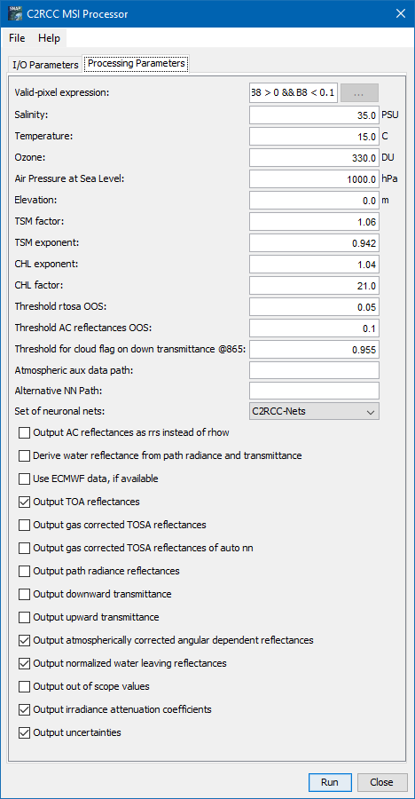

Sentinel-2 MSI Processing Parameters

- Valid-pixel expression
The arithmetic expression defines the pixels which are valid for processing. Pixels which are not valid will be marked as no-data in the
target product.
- Salinity
The value used as water salinity for the scene.
- Temperature
The value used as water temperature for the scene.
- Ozone
The value used as ozone if not provided by auxiliary data
- Air Pressure
The surface air pressure at sea level if not provided by auxiliary data
- Elevation
The value used as elevation for scene.
- TSM factor bpart
Conversion factor bpart. (TSM = bpart * TSMfakBpart + bwit * TSMfakBwit)
- TSM factor bwit
Conversion factor bwit. (TSM = bpart * TSMfakBpart + bwit * TSMfakBwit)
- CHL exponent
Chlorophyll exponent (CHL = iop-apig^CHLexp * CHLfak)
- CHL factor
Chlorophyll factor (CHL = iop-apig^CHLexp * CHLfak)
- Threshold rtosa OOS
Threshold for out of scope of nn training dataset flag for gas corrected top-of-atmosphere reflectances
- Threshold AC reflectances OOS
Threshold for out of scope of nn training dataset flag for atmospherically corrected reflectances
- Threshold for cloud flag on transmittance down @865
Threshold for cloud test based on downwelling transmittance @865
- Atmospheric aux data path
Path to the atmospheric auxiliary data directory. Use either this or the specific products. If the auxiliary data needed for interpolation is
not
available in this path, the data will automatically downloaded.
- Alternative NN Path
Path to an alternative set of neuronal nets. Use this to replace the standard set of neuronal nets with the ones in the given directory. This
is a
parameter which should only used during the development of new neural nets.
- Set of neuronal nets
Set of neuronal nets for the algorithm. Selectable is either C2RCC_Nets or C2X_Nets.
- Output AC reflectances as rrs instead of rhow
Reflectance values in the target product shall be written as remote sensing reflectances and not as water leaving reflectances
- Derive water reflectance from path radiance and transmittance
Alternative way of calculating water reflectance. Still experimental.
- Output gas corrected TOSA reflectances
Can be enabled to include the TOSA reflectances in the target product.
- Output TOA reflectances
Add TOA reflectances to the target product.
- Output gas corrected TOSA reflectances
Add TOSA reflectances to the target product.
- Output gas corrected TOSA reflectances of auto nn
Add TOSA reflectances of the autoassociative neural net to the target product.
- Output path radiance reflectances
Add path radiance reflectances to the target product
- Output downward transmittance
Add downward transmittance to the target product
- Output upward transmittance
Add upward transmittance to the target product
- Output atmospherically corrected angular dependent reflectances
Add atmospherically corrected angular dependent reflectances to the target product
- Output normalized water leaving reflectances
Add normalized water leaving reflectances to the target product
- Output of out of scope values
Add out of scope to the target product
- Output of irradiance attenuation coefficients
Add irradiance attenuation coefficients to the target product
- Output uncertainties
Add uncertainties to the target product